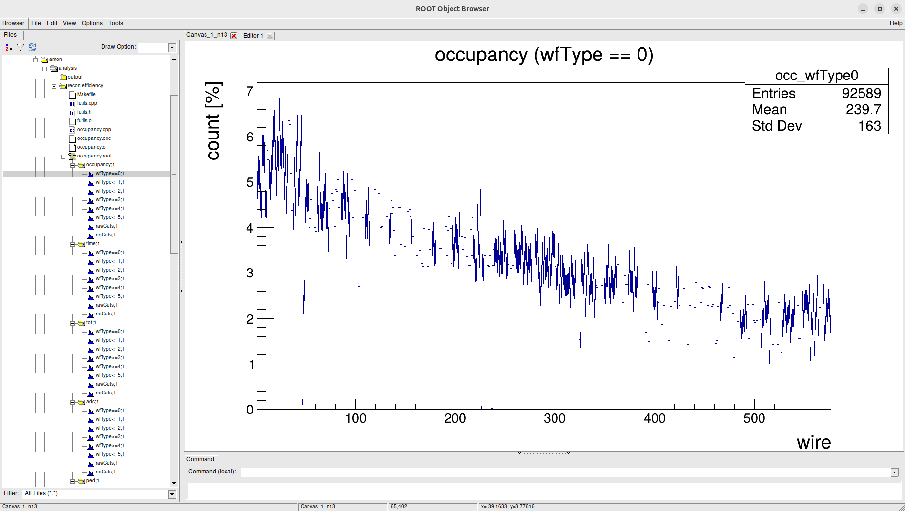
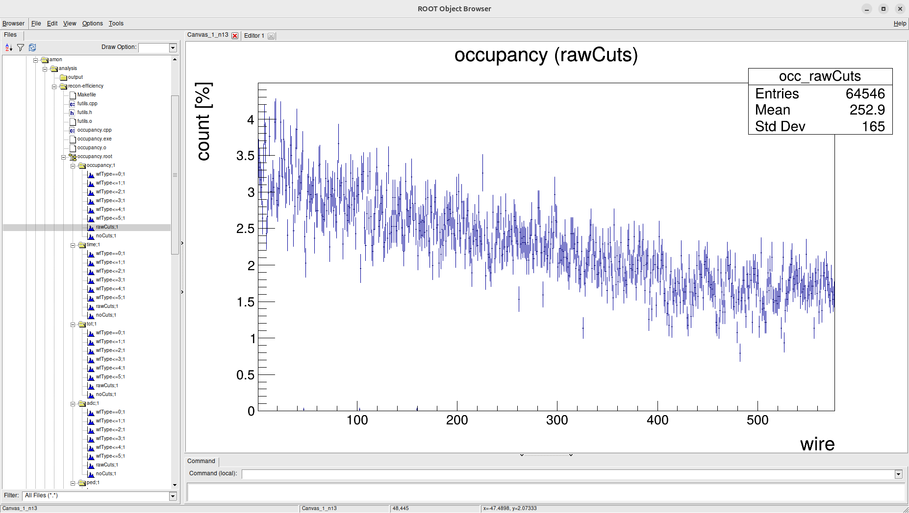
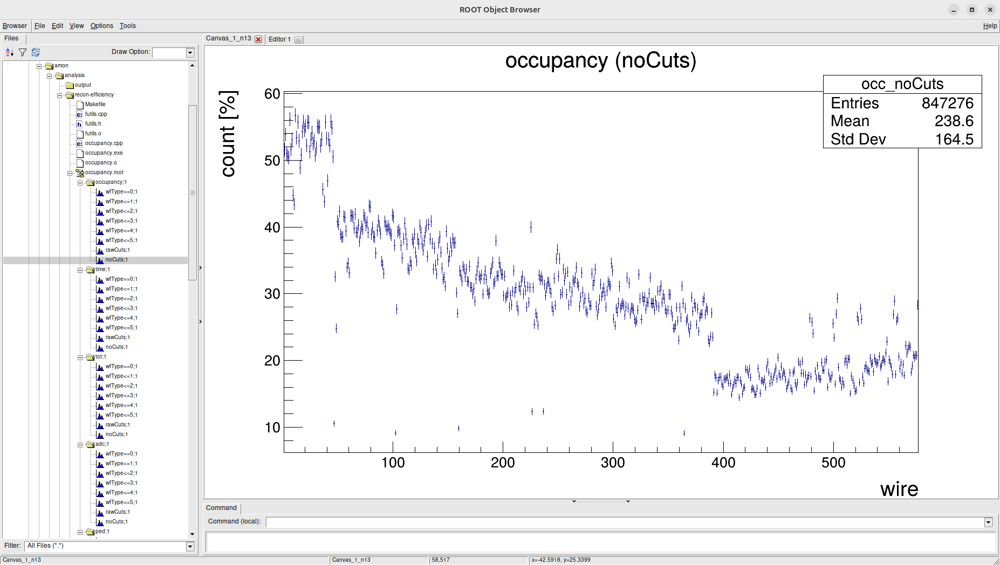

Lognumber 24.
Submitted on Wed, 30 Jul 2025 - 00:20:47 CEST
Marker:
Send to:
git commit
Test on clas_022435.00003.hipo, file decoded with the my version of coatjava.
I really like how things degeneeate with we extend wfType window. It is a very good feature: Noemie did a very good job.
Attachments (3)
1.

2.

3.
